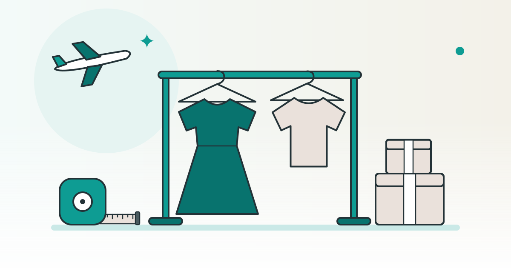

SHOPKIT コラム
韓国のレディース服のネットショップを始める仕入れ・サイズ・返品

韓国のレディース服を扱うお店を考えるときは、写真で選んだ服が、どの仕様でいつ届くのかを確かめるところから始めましょう。仕入れ先への質問を、商品ページの実寸・着用感・返品の案内につなげる方法を整理します。
この記事は、完成品のネットショップを販売している SHOPKIT が書いています。
韓国の服は、仕入れの形と届くまでの日数を先に確かめる
最初は、扱いたい服の着用場面を言葉にしてみてください。仕事にも着られるブラウス、家で洗える日常着など、買う人が使う場面から候補を絞ります。韓国から仕入れて販売する場合も、写真の雰囲気だけで注文を決めず、商品と取引の条件を聞きましょう。
仕入れ先には、品番・色・サイズを添えて問い合わせます。今ある在庫を送るのか、注文後に作るのか、別の場所から取り寄せるのかを分けて聞くと、回答を整理できます。商品の手配、海外からの発送、国内で届ける段階を分け、分かっている予定と未定の部分を記録してください。
| 聞く項目 | 仕入れ先に確かめること | 販売前の準備 |
|---|---|---|
| 商品を特定する情報 | 品番、色とサイズの呼び名、写真と同じ仕様か | 商品ページと注文に使う呼び名を合わせる |
| 注文の条件 | 注文できる単位、色とサイズを組み合わせる条件 | 試す商品と数量を決める材料にする |
| 手配と配送の予定 | 在庫の有無、発送の予定、途中の連絡先 | お客様への案内に使える予定か確かめる |
| 不足や仕様違い | 連絡先、照会に必要な資料、回答を受ける方法 | 仕入れ先への照会とお客様への対応を分ける |
少量を取り寄せる場合も、本注文と同じ仕様を確認できるかを聞いておきます。試した服の記録は、品番・色・サイズと結び付けて残しましょう。詳しい仕入れ方法の比較は、関連の記事で整理しています。
関連：韓国から仕入れる方法｜現地・仕入れサイト・代行の違いと関税
韓国のサイズ表記を、日本の買う人に伝わる実寸に直す
サイズ名は仕入れ先の表記を残し、横に測った寸法を載せる形にすると、元の資料と照らせます。独自に日本のサイズ名へ置き換える前に、その服の測定方法と数字を確かめてください。フリーサイズという名前だけで、どの体形にも合うと案内しないようにします。
ブラウスなら肩幅・身幅・着丈・袖丈、パンツならウエスト・ヒップ・股下など、選ぶときに見る位置を決めます。仕入れ先の表が体の寸法なのか、服そのものの寸法なのかを確認しましょう。身幅のような平らに置いた幅と、周囲を測った長さを混ぜず、単位と測る位置を図や言葉で示します。
伸びる生地は、引っ張らない状態か伸ばした状態かも記録します。ゴムのウエスト、伸びにくい袖口、裏地の有無などは、実寸だけでは分かりにくい着用感の確認項目です。測っていない範囲や仕入れ先が示していない誤差を、店で作った数字で埋めないでください。
着用写真を用意するなら、許可を得て使える写真かを確かめ、着ているサイズと身長、前・横・後ろの見え方をそろえます。腕を上げたときの袖や、座ったときの腰回りなど、想定した着用場面で確認した内容を説明に加えましょう。写真で使ったベルトやインナーが別の物なら、販売に含まれる服と区別します。
服の品質表示と原産国の表示を確かめる
消費者庁の家庭用品品質表示法の案内は、対象に指定された家庭用品の品質表示を扱い、繊維製品向けの規程や手引きへ案内しています。
候補の服について、素材の説明、取り扱いに関する表示、表示する者の情報を、仕入れ先の資料と現物で確かめましょう。外国語のタグを翻訳した文章だけで準備が済んだとせず、日本で販売する際の表示を公的な手引きと照らします。表示対象や個別の書き方は、担当窓口で確認してください。
原産国については、仕入れる国と製造に関する情報を別の欄で管理すると確認しやすくなります。韓国の取引先から届くことと、どこで作られたかを混同しないよう、根拠となる資料を聞きましょう。店の商品説明、タグ、仕入れ先資料の内容に違いがあれば、推測で統一せず照会します。
関連：服のネットショップを始めるには｜品質表示・原産国・サイズの伝え方
輸入するときの関税と、偽物を扱わないための確かめ方
税関のカスタムスアンサー一覧には、輸入の申告、税額の計算、品目分類の事前教示などの案内があります。
仕入れの検討では、素材・作り・用途が分かる商品資料と、価格・送料などの取引資料をそろえましょう。関税率や扱いを韓国の服という呼び名だけで決めず、商品を特定して税関に確認してください。ここでは個別の税額や、適用される制度の判断は扱いません。
税関の知的財産侵害物品の取締りの概要は、知的財産を侵害する物品を輸入禁止の対象として説明しています。
ロゴや特徴のある柄が付く服は、販売元や商品の出所を説明できる資料を求めます。商品写真を自分の販売ページで使える範囲も、仕入れ先に確かめてください。仕入れ先の説明だけで真贋や権利の扱いを確定せず、疑問が残る商品は発注を見送り、資料を添えて窓口へ相談しましょう。
返品と交換の条件は、サイズの案内とそろえる
消費者庁の通信販売の案内では、広告の返品特約について、受け付ける条件や送料負担などの表示を説明しています。返品に関する事項は、同ページの一部省略を認める説明でも、省略できない項目として示されています。
お店で検討する項目は、サイズが合わないという申し出、案内した寸法との違い、注文と違う服、傷や汚れなどに分けて書き出します。それぞれの相談窓口、確認する資料、交換先の在庫を調べる担当を決めましょう。仕入れ先が返品を受けないという回答を、そのままお客様向けの案内に転記する前に、店の販売条件と公的資料を照らしてください。
サイズ交換を案内する場合は、どの品番・色・サイズへの交換を希望するかを確認できるようにします。サイズ表と返品の案内を並べ、商品ページごとに違う説明が残っていないかも見直しましょう。返品の可否や費用負担を個別に決める前には、公的資料と実際の表示をそろえて窓口で確かめてください。
関連：ネットショップの返品の決まり｜通信販売にクーリング・オフは無い？返品特約の書き方
お店を買って始める場合に、受け取る仕入れの情報
自分で商品や画面を用意するほかに、準備済みのお店を購入する方法もあります。SHOPKITは、販売商品と店舗の準備を整え、引継ぎ後に販売を始められる状態でお渡しするサービスです。
SHOPKITの仕入れの情報には、商品ごとの仕入れ先、仕入れ先を探し直すための中国語の検索キーワード、全商品の仕入れ値の一覧が含まれます。
候補のお店で扱う服の製造国と仕入れる国、確認に使える資料の有無は、商品ごとに購入前の相談で確かめてください。受け取る一覧の品番と、サイズ表・表示資料を照らせるかも質問しておきましょう。準備済みの情報を起点に、自分が販売する服の仕様と、お客様へ伝える内容を確かめていく形です。
よくある質問
韓国の服の商品ページには、サイズ名のほかに実寸も載せますか？
サイズ名に加えて、服を測った位置・方法・単位を示す形を考えましょう。体の寸法と服の寸法を混ぜず、伸びる部分や裏地などの確認内容も添えます。
韓国から仕入れる服の原産国は、何で確かめますか？
仕入れ先に製造に関する資料を求め、現物のタグや商品説明と照らしましょう。仕入れる国の名前だけで原産国を決めず、違いがあれば照会します。
韓国の服のお店では、サイズの案内のほかに返品や交換の案内も要りますか？
サイズの案内に加えて、返品や交換の条件を整理しましょう。店の表示と公的資料を照らし、仕入れ先の条件をそのままお客様向けに転記しないようにします。
※ この記事のSHOPKITのお渡しするものに関する記載は、2026年10月15日時点のサービスページによります。税関・通信販売の公的資料は2026年10月27日に確認しました。家庭用品品質表示法の案内は2026年10月26日に確認しました。最新の表示・輸入・返品の扱いは、公的な案内と窓口でご確認ください。